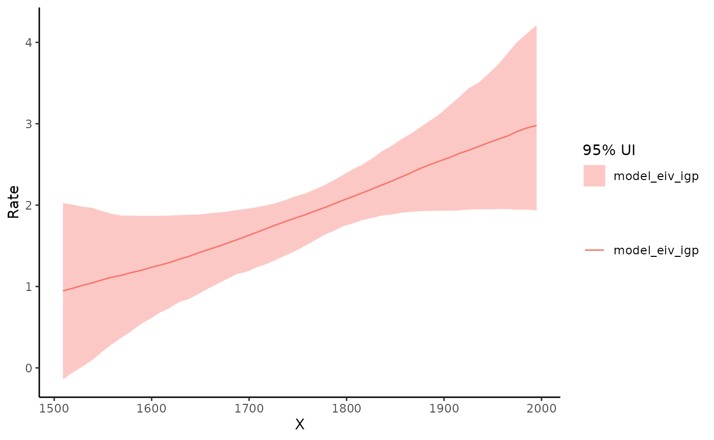
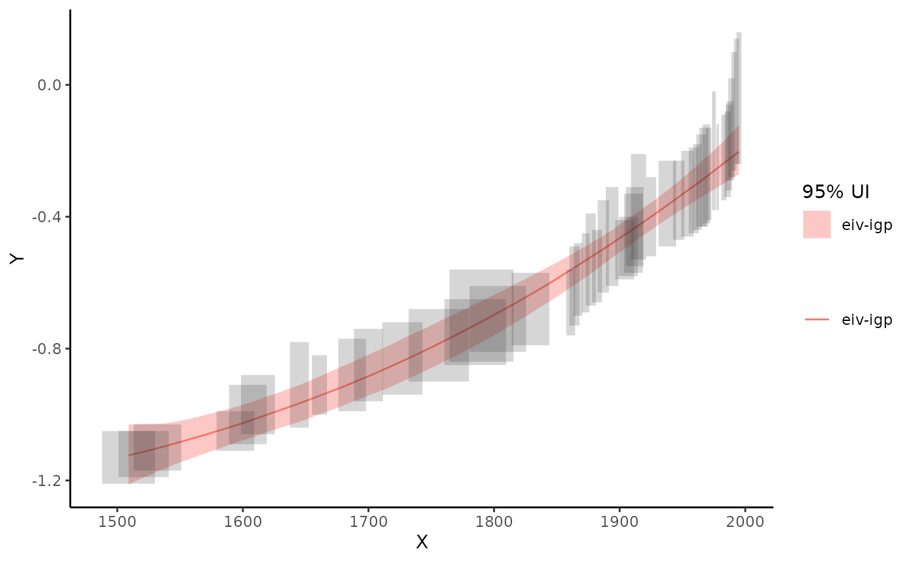
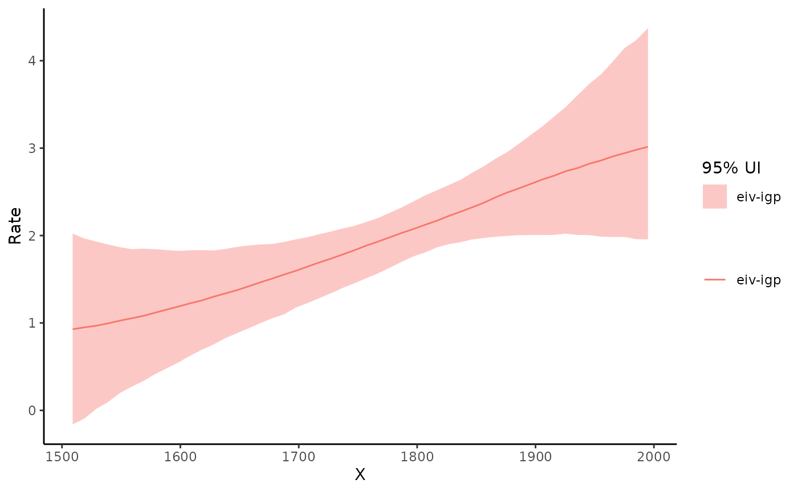

Introduction to EIVmodels
eivmodels.RmdEIVmodels is a R package designed specifically to account for measurement errors within some commonly used models (linear regression, change-point regression, (Integrated) Gaussian process regression) when analysing time-dependent data derived from paleoenvironmental reconstructions.
Example - Simple Linear Regression
This package provides options to simulate data from different types of models where there is measurement error in both the x and y variable. We’ll start by simulating some data from a linear regression model with measurement error. The default range for \(x\) is 0 to 2. I’m simulating 20 data points where the intercept (\(\alpha\)) = 0, slope (\(\beta\)) = 1. The measurement errors for \(y\) and \(x\) are set to 0.1.
dat <- sim_slr(n_sim = 20,
alpha = 0,
beta = 1,
y_err = 0.1,
x_err = 0.1)
dat## # A tibble: 20 × 6
## x x_err y y_err true_y true_x
## <dbl> <dbl> <dbl> <dbl> <dbl> <dbl>
## 1 0.197 0.1 0.128 0.1 0.249 0.249
## 2 1.67 0.1 1.43 0.1 1.65 1.65
## 3 1.27 0.1 1.34 0.1 1.48 1.48
## 4 1.10 0.1 0.977 0.1 1.12 1.12
## 5 1.05 0.1 1.19 0.1 1.13 1.13
## 6 1.26 0.1 1.40 0.1 1.36 1.36
## 7 1.06 0.1 1.20 0.1 1.06 1.06
## 8 1.46 0.1 1.53 0.1 1.43 1.43
## 9 0.381 0.1 0.491 0.1 0.502 0.502
## 10 1.34 0.1 1.56 0.1 1.59 1.59
## 11 0.652 0.1 0.546 0.1 0.545 0.545
## 12 1.68 0.1 1.68 0.1 1.68 1.68
## 13 1.22 0.1 1.25 0.1 1.31 1.31
## 14 1.81 0.1 1.67 0.1 1.68 1.68
## 15 0.168 0.1 0.115 0.1 0.0716 0.0716
## 16 1.89 0.1 2.09 0.1 1.95 1.95
## 17 0.126 0.1 0.120 0.1 0.206 0.206
## 18 1.41 0.1 1.57 0.1 1.47 1.47
## 19 1.70 0.1 1.72 0.1 1.75 1.75
## 20 1.48 0.1 1.37 0.1 1.44 1.44The output data contains the simulated \(x\), \(y\) data as well as the measurement errors that were supplied. It will also contain the “true” underlying process, which can be used for comparison purposes later.
Next we’ll plot the simulated data and we’ll add the true regression line to the plot by adding the argument add_truth = TRUE to the plot_dat() function.
plot_dat(dat,
add_truth = TRUE)
Now we’ll fit the errors-in-variables simple linear regression model to the data and see how close we get to estimating the true data generating process. We’ll start by creating a model object and specifying the argument model = "slr". You’ll see some messages and a progress bar pop up as the JAGS model starts to run.
mod_eiv_slr <- run_mod(dat,
model = "slr")## module glm loaded## Compiling model graph
## Resolving undeclared variables
## Allocating nodes
## Graph information:
## Observed stochastic nodes: 40
## Unobserved stochastic nodes: 23
## Total graph size: 310
##
## Initializing model## No convergence issues detectedNow we’ll plot the model-based estimates with uncertainty. We’ll overlay the “true” line as a comparison.
plot_res(mod_eiv_slr,
add_truth = TRUE)
To access the data that created this plot, use:
mod_reg_res <- par_est(mod = mod_eiv_slr)
mod_reg_res$pred_summary## # A tibble: 50 × 4
## x pred_y lwr_95 upr_95
## <dbl> <dbl> <dbl> <dbl>
## 1 0.126 0.139 -0.00844 0.277
## 2 0.162 0.177 0.0342 0.311
## 3 0.197 0.215 0.0769 0.344
## 4 0.233 0.253 0.118 0.379
## 5 0.269 0.291 0.158 0.414
## 6 0.305 0.328 0.201 0.449
## 7 0.341 0.366 0.245 0.483
## 8 0.377 0.404 0.288 0.518
## 9 0.413 0.442 0.329 0.553
## 10 0.449 0.480 0.371 0.588
## # … with 40 more rowsTo access a summary of the parameter estimates, use:
mod_reg_res$par_summary## # A tibble: 3 × 3
## variable `2.5%` `97.5%`
## <chr> <dbl> <dbl>
## 1 alpha -0.157 0.156
## 2 beta 0.931 1.19
## 3 sigma 0.00300 0.148Example - Using real data
The package contains a dataset called NJ_CC which is subset of a sea level reconstruction from New Jersey, USA (details of the full record can be found in this paper). Note the format of the dataset. This is the format you should use for any data you want to apply these models to.
EIVmodels::NJ_CC## # A tibble: 50 × 4
## x y y_err x_err
## <dbl> <dbl> <dbl> <dbl>
## 1 1509 -1.13 0.08 21
## 2 1521 -1.12 0.07 20
## 3 1532 -1.1 0.07 19
## 4 1594 -1.05 0.06 15
## 5 1604 -1 0.09 15
## 6 1612 -0.97 0.09 13.5
## 7 1645 -0.91 0.13 7.5
## 8 1661 -0.91 0.09 6
## 9 1687 -0.88 0.11 11
## 10 1700 -0.85 0.11 11.5
## # … with 40 more rowsLet’s plot the data
plot_dat(NJ_CC)
EIV simple linear regression
Let’s fit the EIV simple linear regression model. With these data its a good idea to scale the age data. Dividing my 1000 is useful here, as the relative sea level data (\(y\)) is in metres, dividing by 1000 means the slope (rate of change) is still easily interpreted in relation to the original scale of the data. In this case the slope can be interpreted in mm/yr.
mod_eiv_slr <- run_mod(NJ_CC,
model = "slr",
scale_factor = 1000)## Compiling model graph
## Resolving undeclared variables
## Allocating nodes
## Graph information:
## Observed stochastic nodes: 100
## Unobserved stochastic nodes: 53
## Total graph size: 582
##
## Initializing model## No convergence issues detectedLet’s get the parameter estimates
mod_reg_res <- par_est(mod = mod_eiv_slr)
mod_reg_res$par_summary## # A tibble: 3 × 3
## variable `2.5%` `97.5%`
## <chr> <dbl> <dbl>
## 1 alpha -4.52 -3.66
## 2 beta 1.68 2.15
## 3 sigma 0.000659 0.0520Based on this model, the rate of sea level change is 1.9 mm/yr (90% UI: 1.7 to 2.1 mm/yr)
Now, let’s visualise the results
plot_res(mod_eiv_slr)
EIV change-point linear regression
Let’s fit the EIV change point linear regression model instead. All we need to do is change the model argument to “cp”.
mod_eiv_cp <- run_mod(NJ_CC,
model = "cp",
scale_factor = 1000)## Compiling model graph
## Resolving undeclared variables
## Allocating nodes
## Graph information:
## Observed stochastic nodes: 100
## Unobserved stochastic nodes: 55
## Total graph size: 986
##
## Initializing model## No convergence issues detectedLet’s get the parameter estimates
mod_cp_res <- par_est(mod = mod_eiv_cp)
mod_cp_res$par_summary## # A tibble: 5 × 10
## variable mean median sd mad q5 q95 rhat ess_bulk
## <chr> <dbl> <dbl> <dbl> <dbl> <dbl> <dbl> <dbl> <dbl>
## 1 alpha -0.606 -0.617 0.134 0.142 -0.816 -0.371 1.00 769.
## 2 beta[1] 1.46 1.48 0.247 0.254 1.03 1.84 1.01 813.
## 3 beta[2] 4.15 3.56 2.05 0.818 2.57 8.28 0.999 779.
## 4 cp 1.87 1.86 0.0554 0.0551 1.78 1.96 1.00 769.
## 5 sigma 0.0142 0.0114 0.0110 0.0101 0.00153 0.0346 1.00 845.
## # … with 1 more variable: ess_tail <dbl>Now, let’s visualise the results
plot_res(mod_eiv_cp)
EIV Gaussian Process
Let’s fit the EIV Gaussian process model. This will take longer to run than the others (about 25 minutes for the NJ_CC data). Rates will be provided with this model but they are approximated using a method of finite differences. If rates are of interest it is recommended to use the EIV Integrated Gaussian Process model instead.
mod_eiv_gp <- run_mod(NJ_CC,
model = "gp",
scale_factor = 1000)Let’s visualise the results
plot_res(mod_eiv_gp)## $p
##
## $p_rate
Let’s look at the output that creates these results plots
mod_gp_res <- par_est(mod = mod_eiv_gp)
mod_gp_res$pred_summary## # A tibble: 50 × 7
## x pred_y lwr_95 upr_95 rate_y rate_lwr_95 rate_upr_95
## <dbl> <dbl> <dbl> <dbl> <dbl> <dbl> <dbl>
## 1 1509 -1.09 -1.25 -0.925 0.460 -1.08 1.85
## 2 1519. -1.08 -1.23 -0.931 0.482 -1.02 1.85
## 3 1529. -1.08 -1.22 -0.936 0.533 -0.890 1.85
## 4 1539. -1.07 -1.20 -0.940 0.594 -0.774 1.84
## 5 1549. -1.07 -1.19 -0.942 0.645 -0.658 1.84
## 6 1559. -1.06 -1.17 -0.942 0.697 -0.526 1.84
## 7 1569. -1.05 -1.16 -0.941 0.758 -0.401 1.83
## 8 1578. -1.04 -1.15 -0.939 0.819 -0.286 1.84
## 9 1588. -1.04 -1.13 -0.935 0.876 -0.187 1.87
## 10 1598. -1.03 -1.12 -0.930 0.936 -0.0491 1.91
## # … with 40 more rowsLet’s check parameter estimates
mod_gp_res$par_summary## # A tibble: 4 × 10
## variable mean median sd mad q5 q95 rhat ess_bulk ess_tail
## <chr> <dbl> <dbl> <dbl> <dbl> <dbl> <dbl> <dbl> <dbl> <dbl>
## 1 alpha 0.578 0.0222 3.09 1.72 -3.18 6.27 1.00 1028. 752.
## 2 phi 1.25 1.04 0.836 0.608 0.388 2.80 1.00 1102. 1023.
## 3 sigma 0.0154 0.0130 0.0115 0.0113 0.00117 0.0383 1.00 1026. 952.
## 4 sigma_g 3.22 2.36 2.82 1.85 0.610 9.53 1.00 966. 872.EIV Integrated Gaussian Process
Let’s fit the EIV integrated Gaussian process model. This is a much richer model and will also take longer to run than than the simpler models (~ 12 minutes for the NJ_CC dataset). However, an advantage is that it provides the underlying rate process directly from the model. Details of this model can be found in this paper.
mod_eiv_igp <- run_mod(NJ_CC,
model = "igp",
scale_factor = 1000)Let’s visualise the results
plot_res(mod_eiv_igp)## $p
##
## $p_rate
Let’s look at the output that creates these results plots
mod_igp_res <- par_est(mod = mod_eiv_igp)
mod_igp_res$pred_summary## # A tibble: 50 × 7
## x pred_y lwr_95 upr_95 rate_y rate_lwr_95 rate_upr_95
## <dbl> <dbl> <dbl> <dbl> <dbl> <dbl> <dbl>
## 1 1509 -1.12 -1.21 -1.03 0.946 -0.155 2.00
## 2 1519. -1.11 -1.19 -1.03 0.968 -0.0785 1.97
## 3 1529. -1.10 -1.17 -1.03 0.990 0.0254 1.94
## 4 1539. -1.09 -1.16 -1.02 1.02 0.138 1.90
## 5 1549. -1.08 -1.14 -1.02 1.04 0.208 1.86
## 6 1559. -1.07 -1.13 -1.01 1.07 0.303 1.84
## 7 1569. -1.06 -1.12 -1.00 1.11 0.379 1.83
## 8 1578. -1.05 -1.10 -0.991 1.14 0.460 1.84
## 9 1588. -1.04 -1.09 -0.979 1.16 0.513 1.82
## 10 1598. -1.03 -1.08 -0.968 1.19 0.565 1.82
## # … with 40 more rowsLet’s check parameter estimates
mod_igp_res$par_summary## # A tibble: 3 × 10
## variable mean median sd mad q5 q95 rhat ess_bulk ess_tail
## <chr> <dbl> <dbl> <dbl> <dbl> <dbl> <dbl> <dbl> <dbl> <dbl>
## 1 phi 0.161 0.146 0.100 0.0883 0.0310 0.338 1.00 934. 982.
## 2 sigma 0.0144 0.0124 0.0112 0.0115 0.00108 0.0360 1.00 1014. 1019.
## 3 sigma_g 2.82 2.39 1.74 1.39 0.808 6.06 1.00 959. 923.